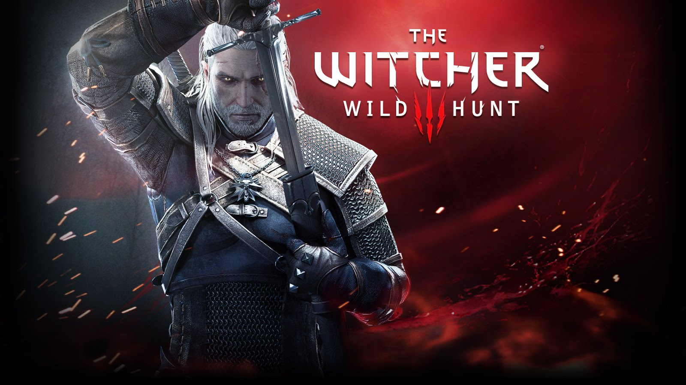
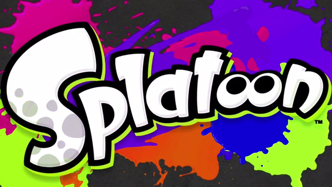

Porque los otakus tambien somos gamers aqui te damos unas pequeñas recomendaciones
THE WHITCHER WILD HUNT

The Witcher 3 Wild Hunt es la tercera entrega de la saga de juegos creada por CD Projekt Red inspirada en los libros del mismo nombre creados por Andrzej Sapkowski, que narran las aventuras de Gerart de Rivia, un brujo o witcher que debe luchar contra
monstruos y que no es un humano cualquiera, ya que goza de unos sentidos más desarrollados, una fuerza descomunal y un instinto asesino que lo convierte en un cazador perfecto.
En The Witcher 3 Wild Hunt nos encontraremos con un inmenso continente lleno de misterio que nos asombrará a cada paso que demos por el inmenso detalle en los escenarios, los importantes cambios de clima donde podemos encontrar desde lluvias
torrenciales hasta fuerte sol, pasando por tormentas de nieve, todo influenciado también por la hora del día (sí, aquí hay un sistema de día y noche y hasta ciclos de la luna) y la cantidad de ubicaciones que tendremos que descubrir.
Los combates son rápidos y se goza de gran movilidad al atacar y defenderse, no al nivel de los juegos Souls, pero sí nos exigen estar muy pendientes de los movimientos de nuestros enemigos para realizar nuestro ataque; tenemos la opción de
elegir entre un ataque potente y otro rápido y de decidir si lo realizamos luego de usar alguna de nuestras magias (o señales como se les dice en el juego) que usualmente debilitan los oponentes. Como armas contamos con dos espadas, una de plata
para atacar monstruos y una de acero para enfrentar humanos y también tenemos acceso a una ballesta que realmente poco utilicé durante mi aventura.
MORTAL COMBAT X

Han pasado 23 años desde que John Tobias y Ed Boon crearon una pieza fundamental para comprender los videojuegos hoy en día: Mortal Kombat. Un título de peleas que retomó la base dejada por Street Fighter II y la dotó de elementos trasgresores
para su época: el concepto inspirado por el cine de artes marciales, el uso de actores reales para retratar a los personajes y la violencia gráfica apelando a una audiencia más madura
Con más de dos décadas y toneladas de polémica a cuestas, la franquicia no sólo encuentra en Mortal Kombat X la décima entrega de la serie. El juego representa también una transición generacional que no se limita a las consolas, sino que alcanza
además a los jugadores. En una época donde los juegos de pelea parecen estar destinados a un nicho particular muy distante de la brutal popularidad con la que se le llegó a conocer, queda claro que una de las intenciones es atraer a una nueva
camada de peleadores.
dan sentido a los violentos y sanguinarios combates que verás. Rostros que son parte de la cultura popular, como Scorpion, Sub Zero, Sonya, Kitana, entre otros, tienen un brutal encuentro generacional con la sangre nueva. Cassie Cage, Jacqui
Briggs, Takeda y Kung Jin, herederos de los héroes que se batieron en duelo contra amenazas de otra dimensión, no son la única novedad en el elenco. El nuevo gobernante del Outworld Kotal Kahn, la venenosa D’Vorah; el aplastante y extraño dúo
de Ferra/Torr, así como el pistolero cazarrecompensas Erron Black completan el cuadro.
Un elenco de 24 personajes jugables podría lucir limitado a comparación de otros títulos, incluso en la misma serie. A cambio, Netherrealm debuta en este juego el sistema de variaciones. En él, todo peleador cuenta con habilidades básicas a
las que se le suman poderes y detalles que son muy distintos para cada versión.
.
SPLATOON

Después de catorce años, la Entertainment Analysis y Development Division de Shigeru Miyamoto lanza su primer franquicia nueva (la última fue Pikmin) llamada Splatoon, fue el grupo número dos de la división quien lo desarrolló, el cual ahora tiene a la
cabeza a Hisashi Nogami (tomando la posición de Katsuya Eguchi en 2013) creador del divertidísimo Tetris Attack y de todo el concepto de los Mii.
Splatoon es un shooter-platformer en tercera persona, tus metas varían dependiendo cada uno de los tres modos disponibles pero tus habilidades son la capacidad de disparar tinta y de convertirte en un calamar que puede esconderse o nadar en
la misma más rápidamente en comparación de como lo harías caminando en tu forma humanoide; ahí mismo tenemos varias abstracciones de situaciones muy familiares para quienes jugamos shooters en primera o tercera persona, esconderse en la tinta
es una mecánica de cobertura, como aquella que vimos en Kill Switch, Gears of War y Uncharted, nadar en la tinta no sólo es correr, también es recargar munición de nuestra arma… Tinta en este caso
Pero Splatoon no es simplemente Nintendo intentando hacer un shooter en tercera persona a su manera, Splatoon se las ingenia para tener reglas y prioridades distintas de las que hemos visto en el sub-género, por ejemplo, en su modo principal
que es Turf War (multiplayer online) salir a dispararle a tus adversarios no siempre es una buena idea, tu prioridad siempre será pintar el suelo lo más que puedas, secundariamente puedes tratar de entorpecer el desempeño de tus adversarios
disparándoles, aún así es muy común que quienes acostumbran jugar este tipo de juegos inician torpemente tratando de matar a lo que les pongan en frente.
No todos los modos de Splatoon son online, podrás jugar offline Battle Dojo y Hero Mode, entiendo que a muchos les interesa el Single player por lo que comenzaré con el Hero Mode, este modo cuenta con niveles de puzzles y plataformas en un
modo para un jugador, aquí no podrás escoger tu arma, obligatoriamente usarás la Splattershot (mi favorita) y la podrás subir de nivel para que tenga mayor rango y haga más daño entre otras cosas, también podrás subir el nivel de tu tanque de
tinta y desbloquear varios tipos de granadas.